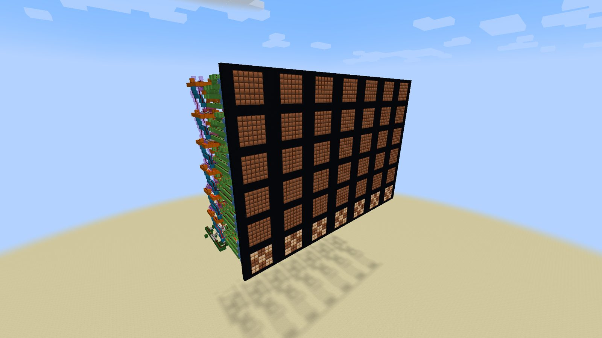
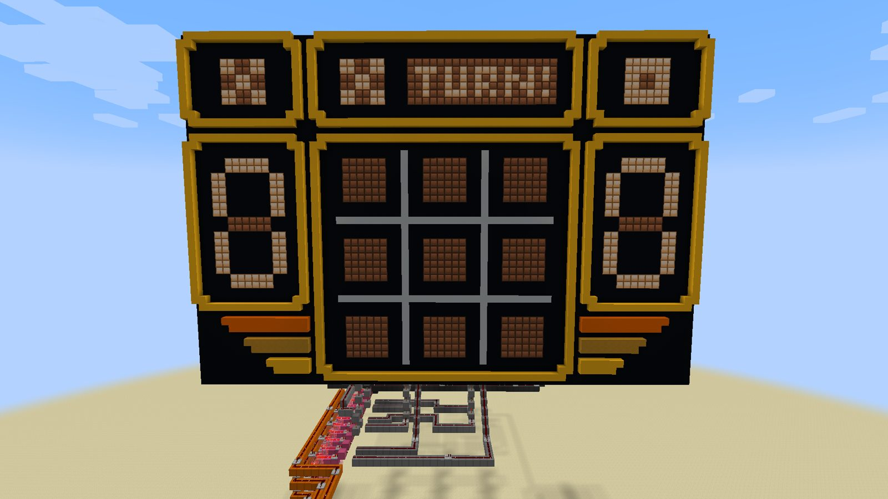
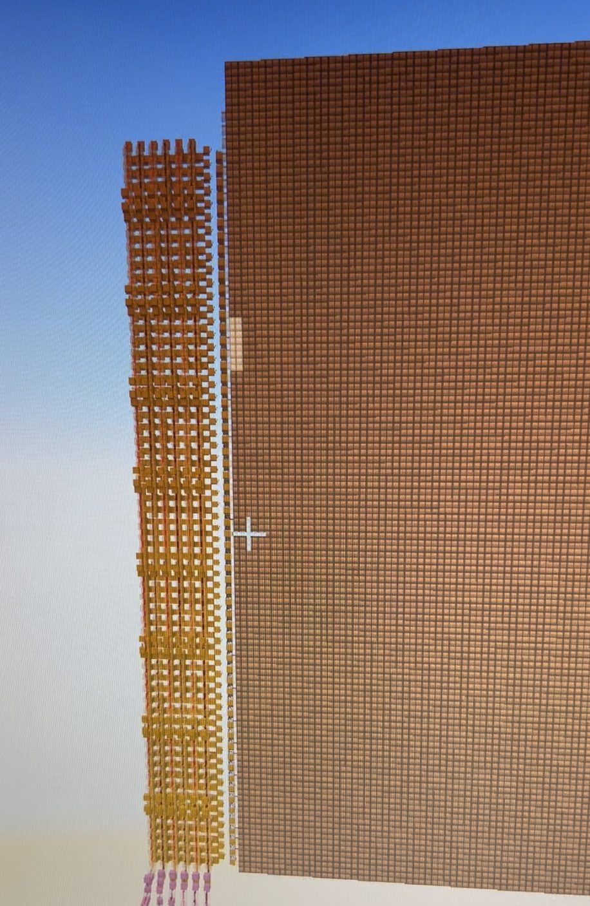

Digital Logic Games in Minecraft
Three games built entirely out of logic gates. No mods, no command blocks and no code, just hardware I designed myself.
Overview
Redstone in Minecraft works like real digital logic. You have signals that are either on or off, wires, and components you can wire up into NOT, AND and OR gates, and every component adds a small delay just like a real gate does. Anything bigger than that you have to build yourself, from the gates up.
I have used it to build Tic Tac Toe, Connect 4 and Pong. Each one is a complete embedded system made only of digital logic: inputs from the players, memory to hold the game state, logic that works out what happens next, and a display driver that draws it all on a screen made of blocks. There is no processor and no software anywhere in it. It is closer to designing a chip than writing a program, and because everything is built in 3D, fitting the wiring into the space is a real problem too.

The Architecture
All three games are built on the same set of building blocks, which I designed once and then reused and extended for each new game:
- RAM to store which squares are taken and by which player
- ROM holding the shapes of the X and O pieces, since there are no colours to work with
- Decoders to turn a binary value into a position on the screen
- Encoders and multiplexers to route player inputs and pick which part of the board is being read
- Counters for anything that moves or needs to be tracked over time
Designing it this way meant I could treat each part like a module with its own inputs and outputs, test it on its own, and then connect it into the rest of the system. It is the same way I now structure Verilog.

Tic Tac Toe
Two players take turns placing an X or an O. Each square has its own bit of memory, the pieces are drawn from the shapes in ROM, and the win logic checks every line of three for each player using AND and OR gates. When someone wins, the score display on the side of the board updates.
Getting the turn logic right was harder than it sounds. The board has to know whose go it is, stop a player from placing a piece on a square that is already taken, and only swap turns once a move has actually gone through.

Connect 4
Connect 4 needed a much bigger memory, so I designed what I call a trickle down RAM. When a player drops a piece into a column, a signal is sent into the top of that column and falls down through the memory cells until it either reaches the bottom or hits a cell that is already filled, then it locks into the cell above. That way the memory itself does the job of gravity, and there is no separate logic needed to work out where the piece should land.
The pieces are drawn from ROM in the right position on the screen as X and O shapes. This was the biggest thing I had built at the time and it is where most of my understanding of digital logic and boolean algebra comes from.

Pong (In Progress)
Pong is the hardest so far because everything is moving in real time. Each paddle is a 6 bit counter that the player counts up or down, with logic that stops it at 0 and at 61 so it can't go off the screen. The counter's value is then decoded to draw the paddle in the right place.
The ball will use two more counters for its x and y position. When it hits a wall or a paddle, the direction of the matching counter flips, which makes it bounce. I am working on the collision logic now.

What It Taught Me
These builds are where I actually learned digital design, well before I started it at university. Building memory, counters and decoders out of individual gates means you understand exactly what they are doing, and you run into real hardware problems along the way: signals arriving at different times because one path has more delay than another, logic that has to be laid out to fit a fixed space, and bugs you can only find by watching the signals move through the circuit.
When I came to write Verilog for the FPGA on my Engineers Without Borders project, the ideas were already familiar. I just had a much faster way of building them.